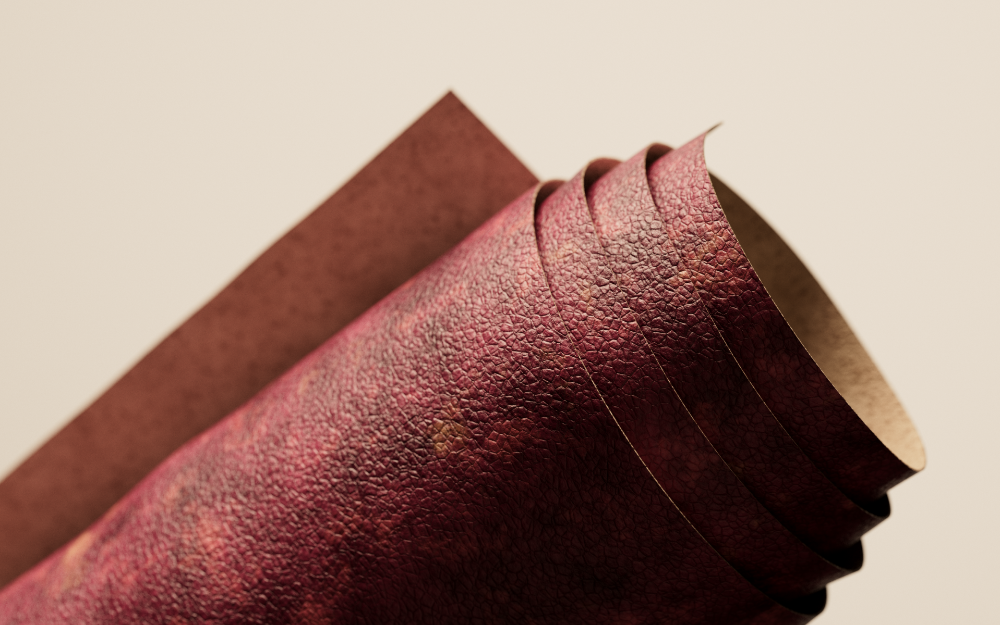
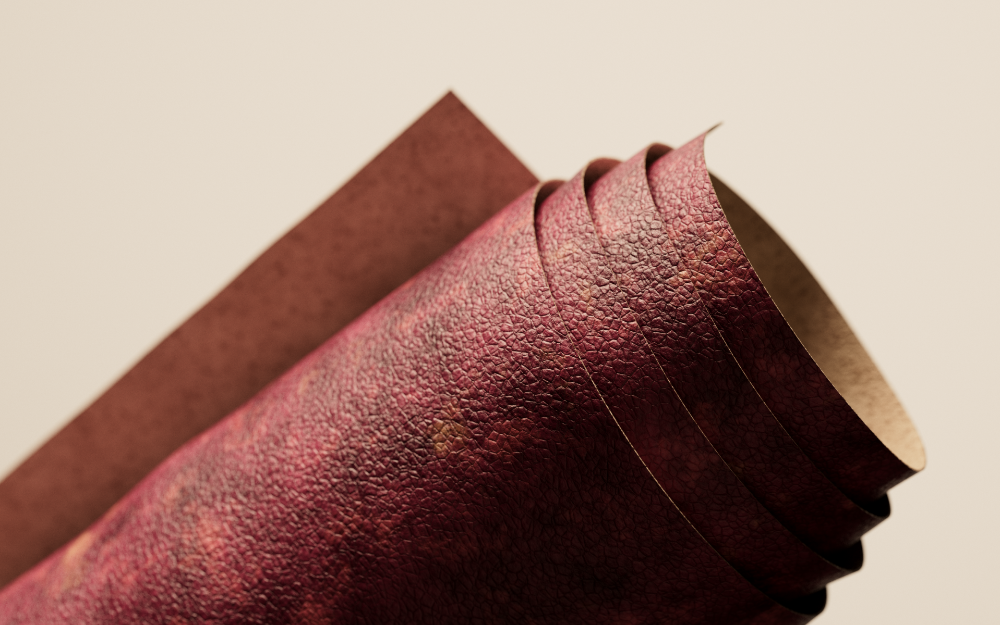
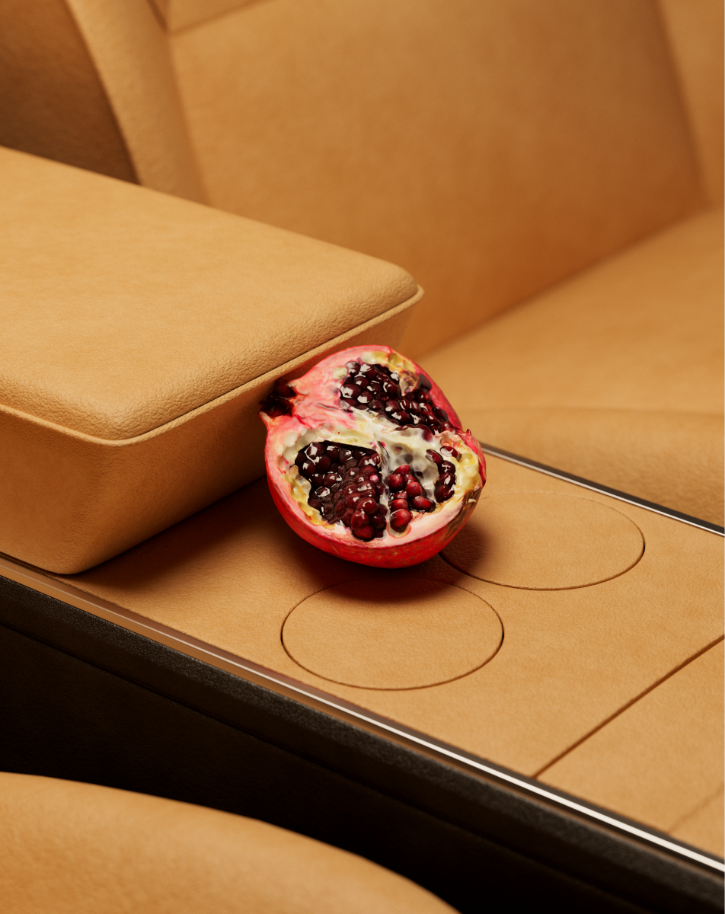
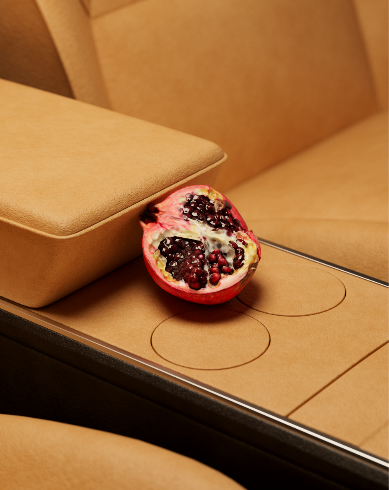
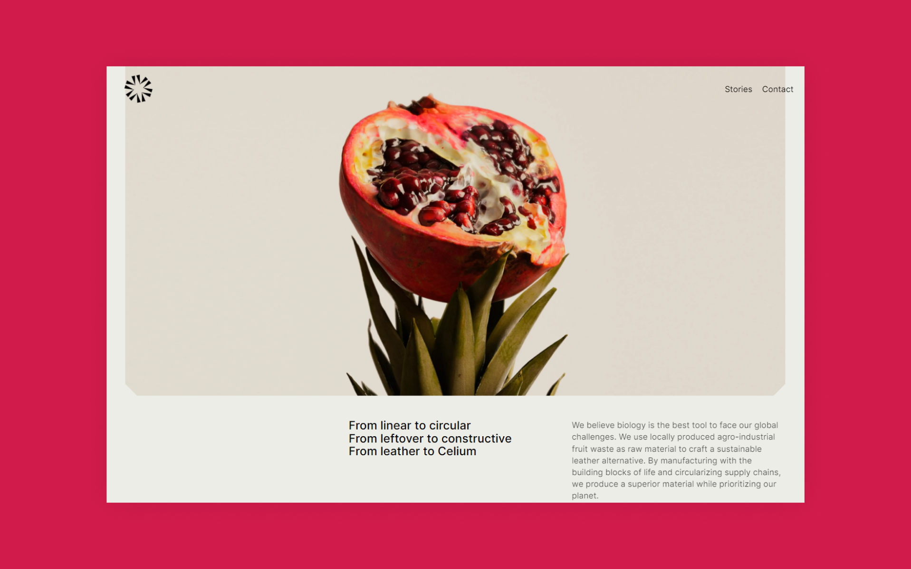
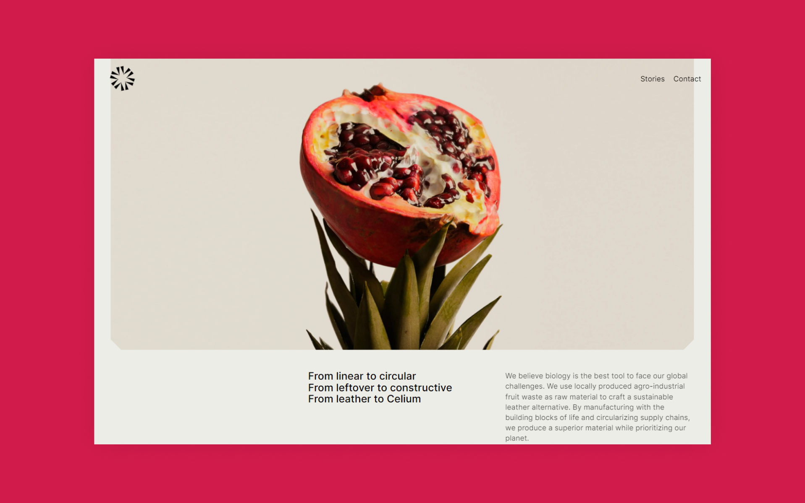
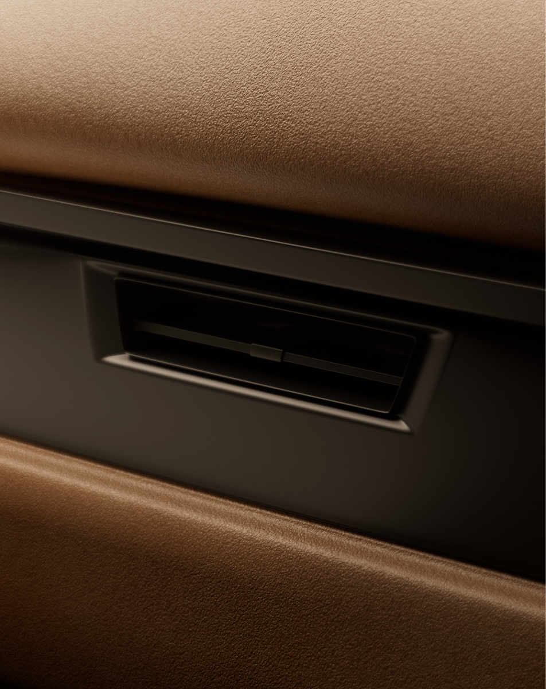
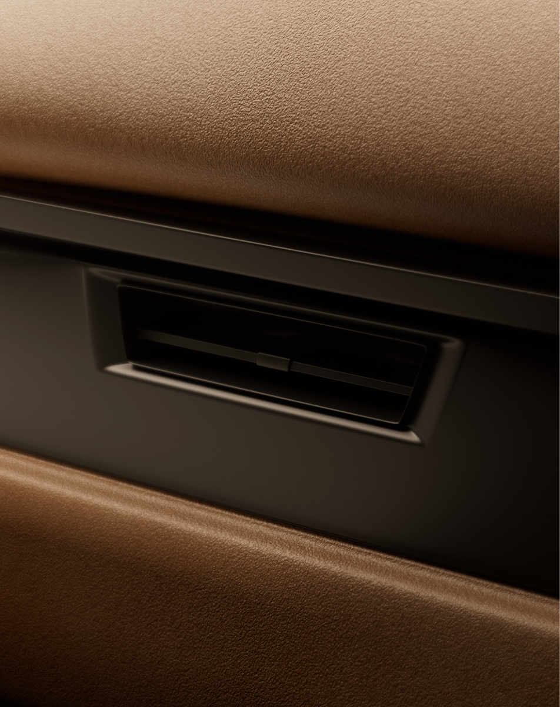

Polybion "Imagery"
Polybion it's a Mexican company that grows premium, next-generation materials designed with nature and manufactured with biology. The company’s mission is to bring performance and possibility to 21st Century designers and material engineers. Polybion uses food waste as a raw material, and designs, produces, and finishes its bioassembled products under the same roof to increase sustainability and drive the circular economy.
In 2022, they renewed their entire brand, and to complement the beautiful identity and new website, I was invited to create some images that could demonstrate, in a fashionably way, the link between food waste and Polybion's leather as well to show some possibilities for their application.
Client: Polybion
Agency: Chaco
Year: 2022
Project Management: Lilly Matão
Design & Art Direction: Rogério Lionzo
3D Design: Bruno Faiotto
Website Design: Twoo


 

 



 


 
